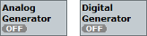
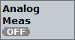
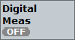
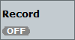

There is a softkey for each audio measurement, for each audio generator, for waveform playback and for waveform recording. The presence of the softkeys depends on the tab currently selected in the main view.

Both softkeys are visible if an audio measurement tab is selected (analog or digital).
They show the current states of the generators.
To turn an audio generator on or off, select the generator softkey and press the [ON | OFF] key. Alternatively, right-click the generator softkey.
Remote command:
This softkey is only visible if the analog audio measurement tab is selected.
The softkey shows the current state of the analog audio measurement. You can retrieve additional measurement substates via remote control.
To turn an audio measurement on or off, select the measurement softkey and press the [ON | OFF] or [RESTART | STOP] key. Alternatively, right-click the measurement softkey.
Remote command:
This softkey is only visible if the digital audio measurement tab is selected.
The softkey shows the current state of the digital audio measurement. You can retrieve additional measurement substates via remote control.
To turn an audio measurement on or off, select the measurement softkey and press the [ON | OFF] or [RESTART | STOP] key. Alternatively, right-click the measurement softkey.
Remote command:This softkey is only visible if the "Waveform" tab is selected.
The softkey shows the current state of the audio file playback.
To start or stop playing an audio waveform file, select the "Play" softkey and press the [ON | OFF] key. Alternatively, right-click the "Play" softkey.
If you play a waveform file for the first time, the start takes a bit longer because the waveform file is converted. During the conversion, the softkey displays an hour glass symbol (state "Pending").
Remote command:
This softkey is only visible if the "Waveform" tab is selected.
The softkey shows the current state of the audio file recording. You can retrieve additional measurement substates via remote control.
To start or stop recording an audio waveform file, select the "Record" softkey and press the [ON | OFF] or [RESTART | STOP] key. Alternatively, right-click the "Record" softkey.
ON starts the recording. STOP pauses the recording. RESTART continues the recording. OFF stops the recording and writes the waveform file.
Remote command: